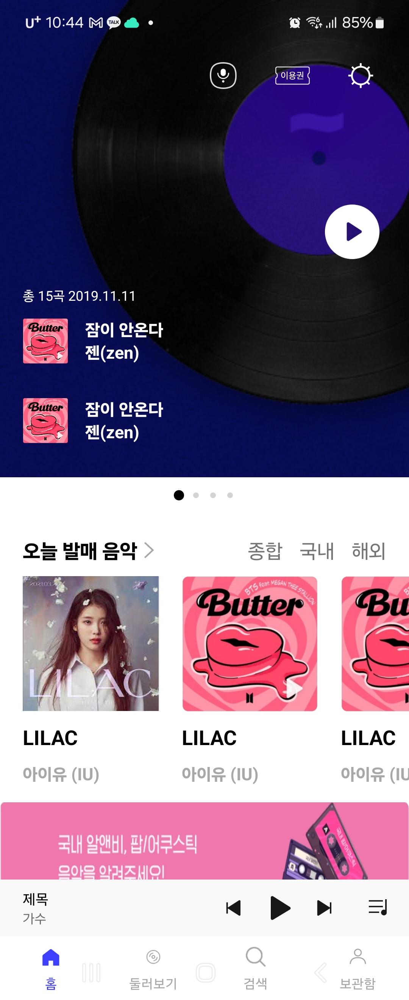
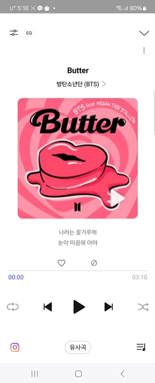
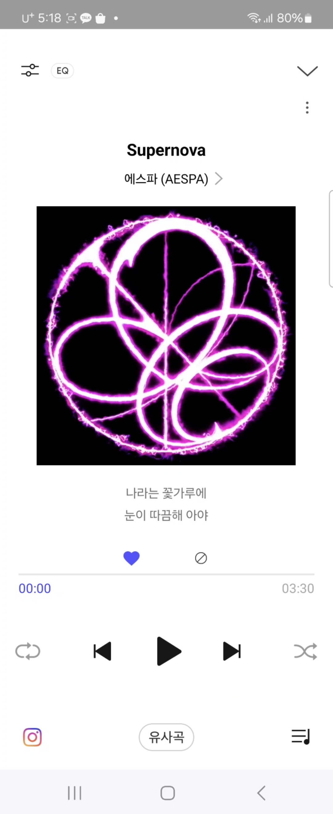
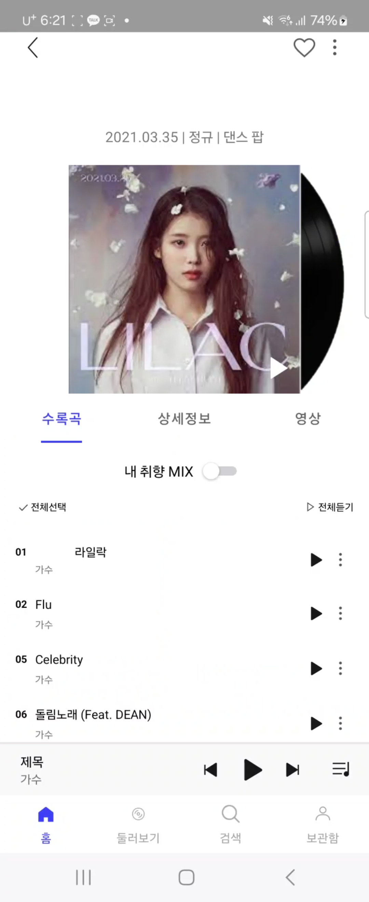
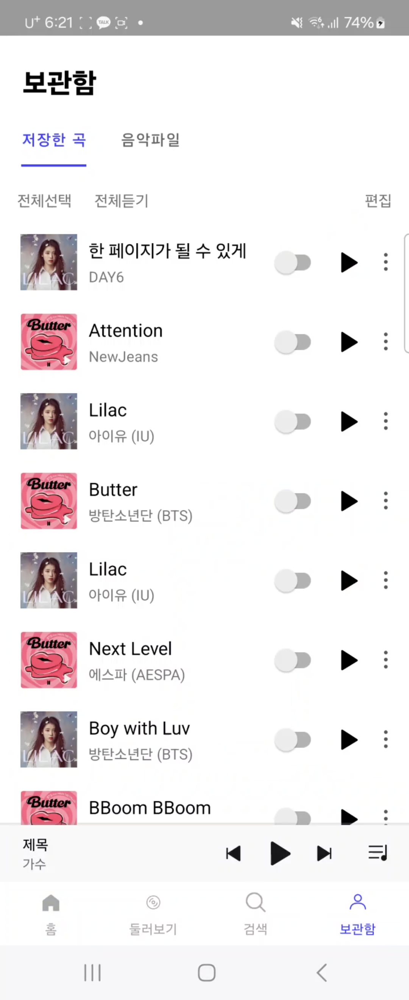
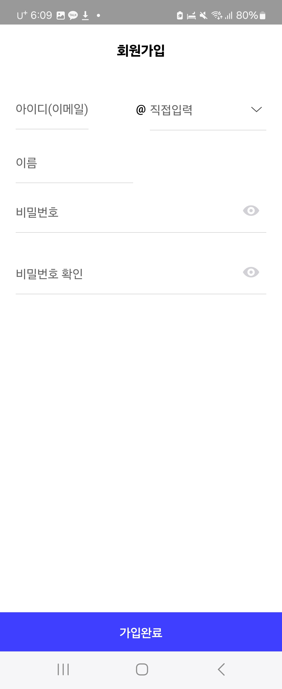
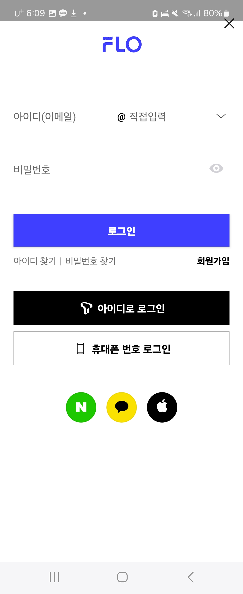

FLO
동아리 스터디 프로젝트
      
음악 스트리밍 서비스 FLO를 클론코딩한 앱
2024.04 ~ 2024.06
Overview
디자인 요구사항을 반영하고, 안드로이드 앱 화면을 스스로 구성하는 법을 익히기 위해 제작
Skills
디자인 패턴: MVC, 어댑터
DB: RoomDB, JWT 토큰
UI/UX: MediaPlayer, TabLayout, ViewPager, CircleIndicator
Result & Issues
- MediaPlayer와 Thread를 사용해서 음악 재생 및 일시중지
- JWT 토큰으로 회원가입과 로그인 구현
- RoomDB로 앨범 및 음악 데이터를 관리하여 좋아요 기능 구현
이전
다음